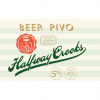
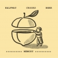
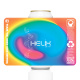

A Few Small Beers
Matt's 50th Birthday Beer Tasting · February 28, 2026
Your Name
1
Vary
Halfway Crooks · Czech Pilsner · 5.0%
Untappd 4.14
Super boiled for more malt expression. Honey, shortbread, noble hops.
Rating
Notes
2
Beyond The Edge Of Existence
Little Cottage · ESB · 4.8%
Untappd 3.86
East Kent Goldings hops, caramel notes, toasted bread, balanced bitter finish.
Rating
Notes
3
Memory
Halfway Crooks · Saison · 7.1%
Untappd 3.99
Foeder-aged saison re-fermented on peaches. Farmhouse funk meets stone fruit.
Rating
Notes
4
Helix
Inner Voice · Hazy IPA · 6.0%
Untappd 4.14
New England-style. Juicy, soft, tropical hops. Hazy and smooth.
Rating
Notes
5
Mango Lassi Sunset
Inner Voice · Smoothie Sour · 6.0%
Untappd 4.29
Mega fruited with mango puree and fresh coconut. Tropical, tart, creamy.
Rating
Notes
6
Perennial Abraxas
Perennial Artisan Ales · Imperial Stout · 10%
Untappd 4.40
The birthday closer. Ancho chili, cacao nibs, vanilla, cinnamon. Like Mexican hot chocolate in a glass.
Rating
Notes

 2
2 5
5 6
6